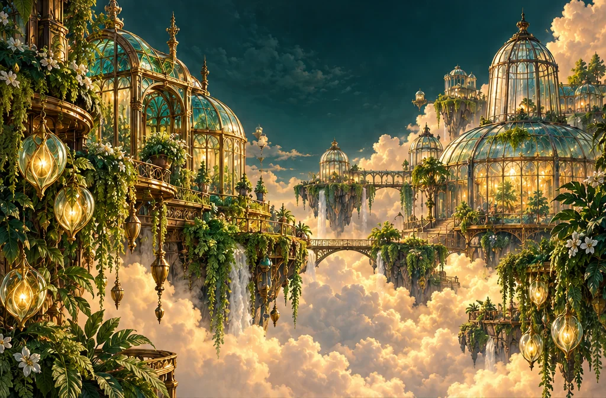
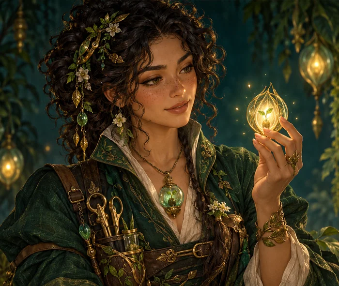
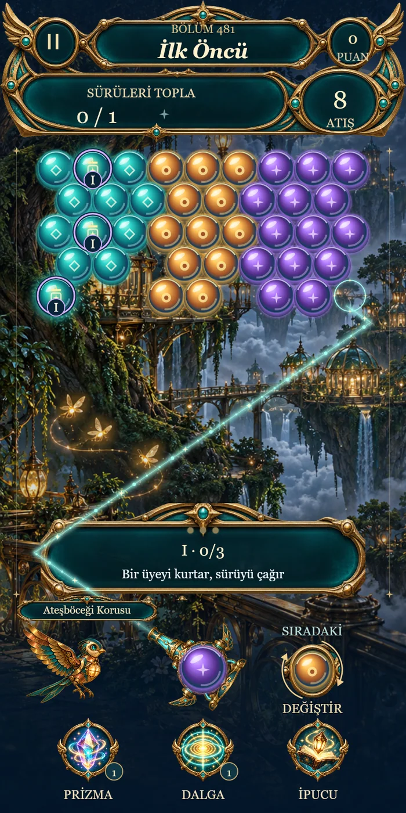
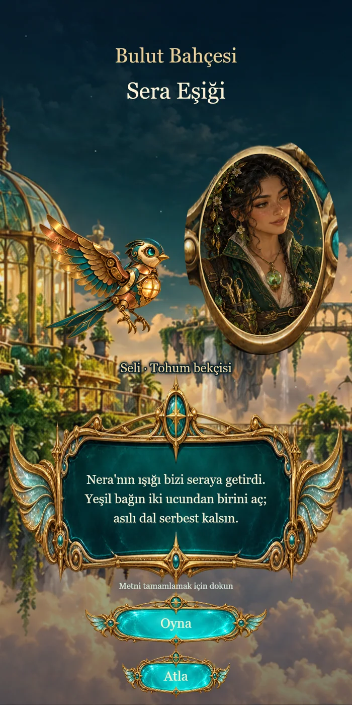
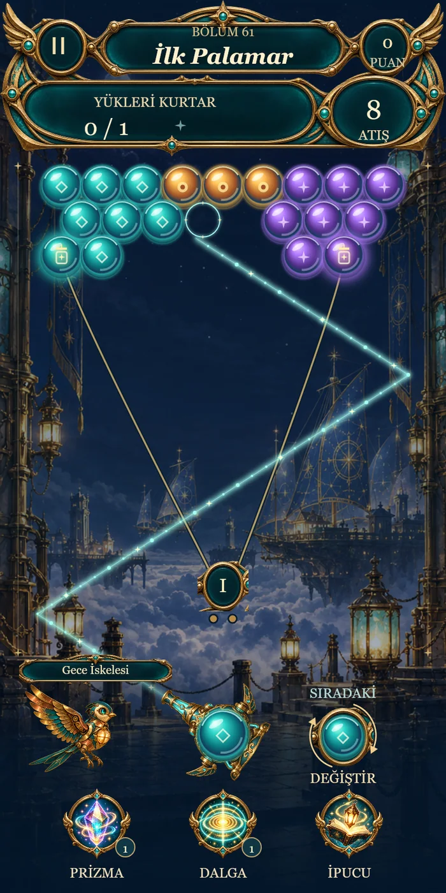
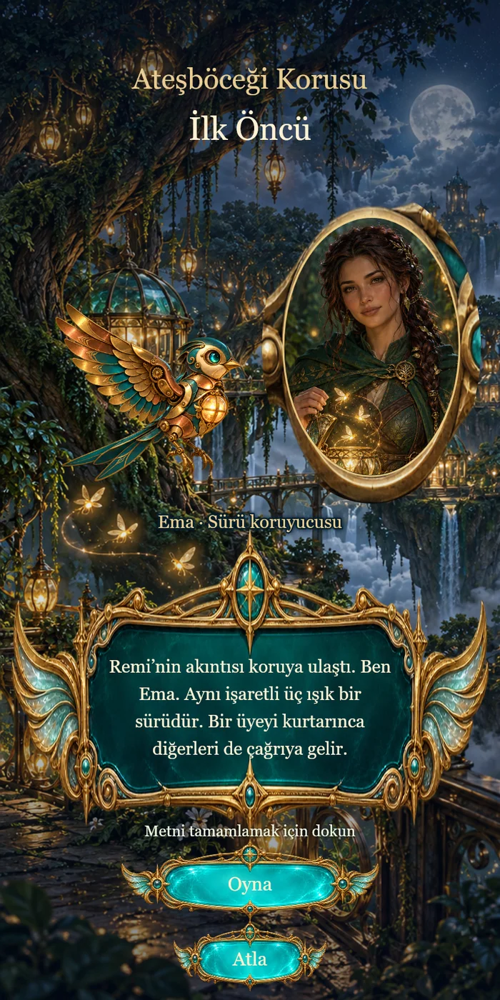
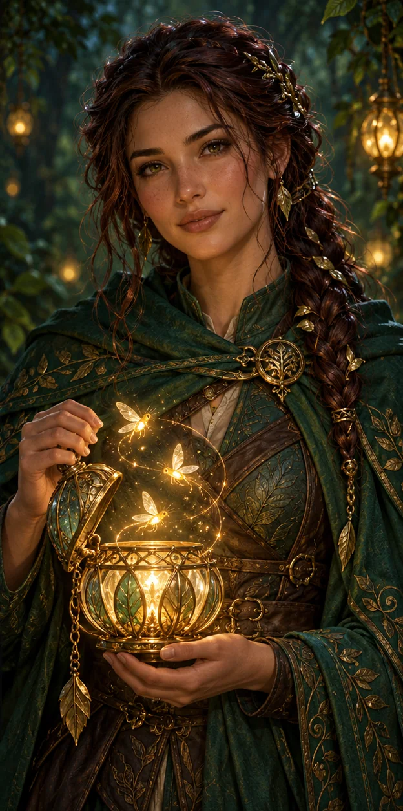

Seli ve asılı dallar
Hikâye sahnesi, yeşil bağın uçlarından birini açarak asılı dalı serbest bırakma fikrini tanıtıyor. Yalnız en büyük renk grubunu aramak yerine bir bağlantının neyi taşıdığına bakmak yararlı.

PROCİNALP / GELİŞTİRME GÜNLÜĞÜ
Fenerlerin ışığında, hikâyeden bulmacaya.
GELİŞTİRME / YEREL TEST · v0.26.0Mevcut test kapsamı 25 ada / 500 bölüm
Oyun türü Hikâyeli balon bulmaca
Yayın durumu Mağazada yayımlanmadı
DÜNYANIN İÇİNDEN
Lümen Adaları’nda Pırı’nın yolculuğu, bulutların üzerindeki farklı adalardan geçiyor. Kısa hikâye sahnesi bölümün bağlamını kuruyor; ardından aynı dünyanın içinde bir bulmaca açılıyor.
Mevcut testte renkli kapsülleri eşleştirerek hedefleri kurtarıyorsun. Eşleşme kadar bağlantılar da önemli: desteğini kaybeden bir küme düşebiliyor. Ada değiştikçe yalnız arka plan değil, dikkat etmen gereken hedef de değişiyor.
Bu sayfadaki sanat ve sahneler mevcut projeden seçilmiştir. Sanat görselleri ile oyun çizicisi çıktıları ayrı etiketlenmiştir.

SAHNE GALERİSİ
Oyunun kendi çizicisinden alınmış mevcut test çıktıları. Fiziksel telefon ekran görüntüsü değildir.
Görsele dokun, ayrıntıları incele.




Hikâye sahnesi, yeşil bağın uçlarından birini açarak asılı dalı serbest bırakma fikrini tanıtıyor. Yalnız en büyük renk grubunu aramak yerine bir bağlantının neyi taşıdığına bakmak yararlı.
İskele sahnesindeki yükler bağlantılara asılı. Atış yolunu seçmeden önce hedefin hangi noktalardan destek aldığını ve bir eşleşmenin bu desteği değiştirip değiştirmeyeceğini incele.
Bu adada aynı Roma rakamını taşıyan üç hedef bir sürü oluşturuyor. Bir üye kurtulunca diğerleri aynı atışta çağrılıyor. Kabuklu bir üyenin yalnız kabuğunu çatlatmak, kurtarmakla aynı şey değil.

KARAKTER DEFTERİ
Ateşböceği Korusu’nun sürü koruyucusu, üç ışığı bir arada düşünmeyi öğretiyor. Bölüm hikâyesiyle hedef kuralı aynı fikir etrafında birleşiyor: birini kurtar, diğerlerine yol aç.
Burada görülen Ema ve Seli portreleri statik oyun sanatıdır. Sayfa, karakterler için yeni animasyon veya seslendirme özelliği vaat etmez.
Mevcut sürüm geliştirme ve yerel test aşamasında. Google Play yayını ve herkese açık indirme bağlantısı bulunmuyor; bu vitrinden APK dağıtılmıyor. Çalışma adı ve içerikler geliştirme sırasında değişebilir.
25 ada ve 500 bölüm mevcut test paketinin kapsamıdır. Bu sayı, tüm bölümlerin fiziksel cihazda veya oyuncularla doğrulandığı anlamına gelmez. Telefon performansı, dokunma ergonomisi ve insanlarla zorluk testleri henüz tamamlanmış olarak raporlanmıyor.
Test sürümünde internet izni, reklam ve gerçek ödeme bulunmuyor. Bu bilgi web sitesinden ayrı olarak mevcut test paketine aittir. İleri sürümler için kalıcı bir özellik sözü değildir.
Galeri sahneleri oyunun gerçek çizicisinden üretilmiş test çıktılarıdır; cihaz kaydı değildir. Büyük dünya ve karakter görselleri ise projede kullanılan oyun sanatıdır. SpiraFall gibi başka bir oyunun görüntüsüyle karıştırılmaz.
Doğrulanmış bir yayın tarihi yok. Bu sayfa mevcut durumu gösterir; çıkış tarihi veya tamamlanmamış özellikler için söz vermez.